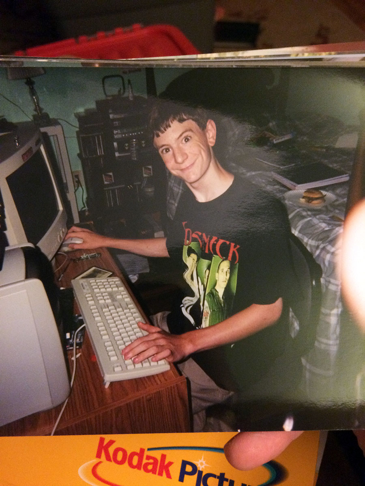
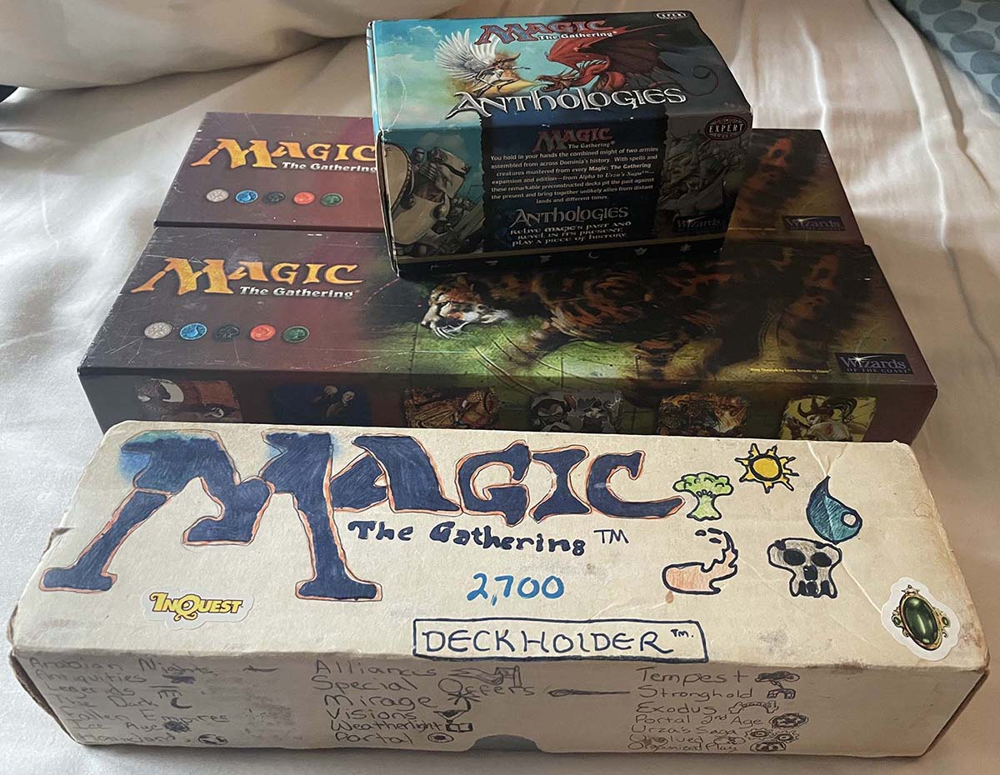
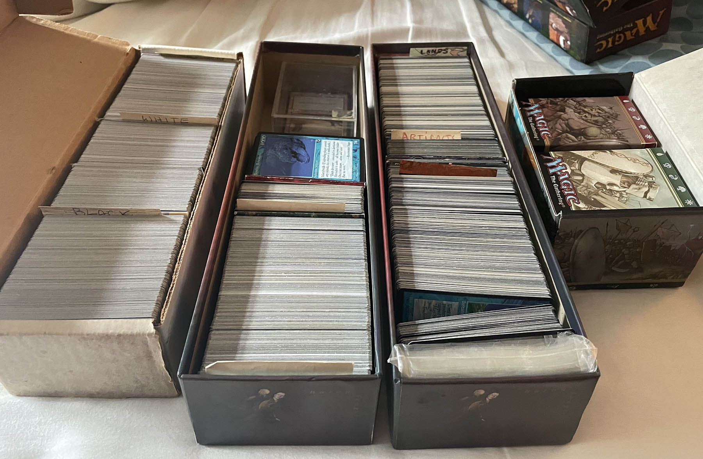
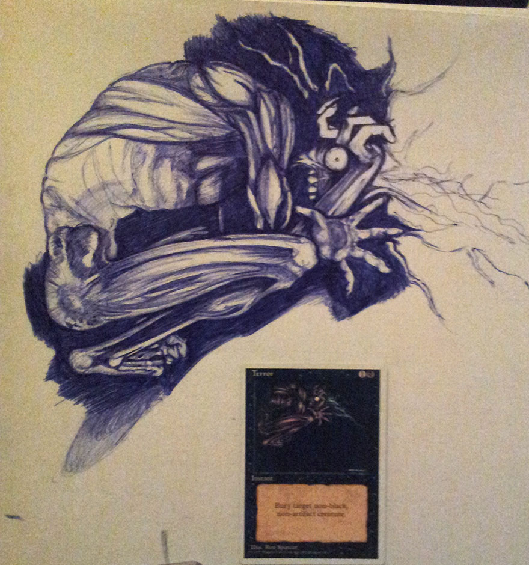
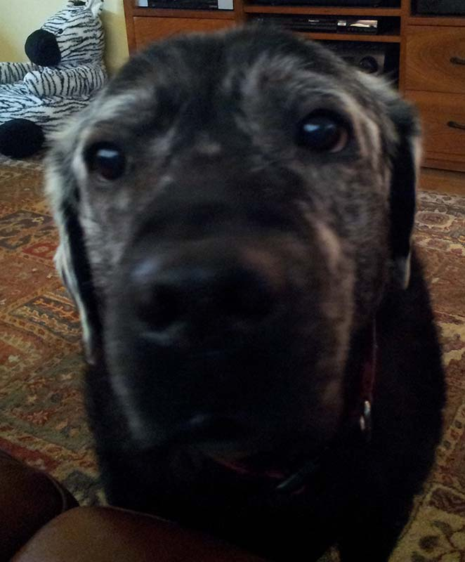
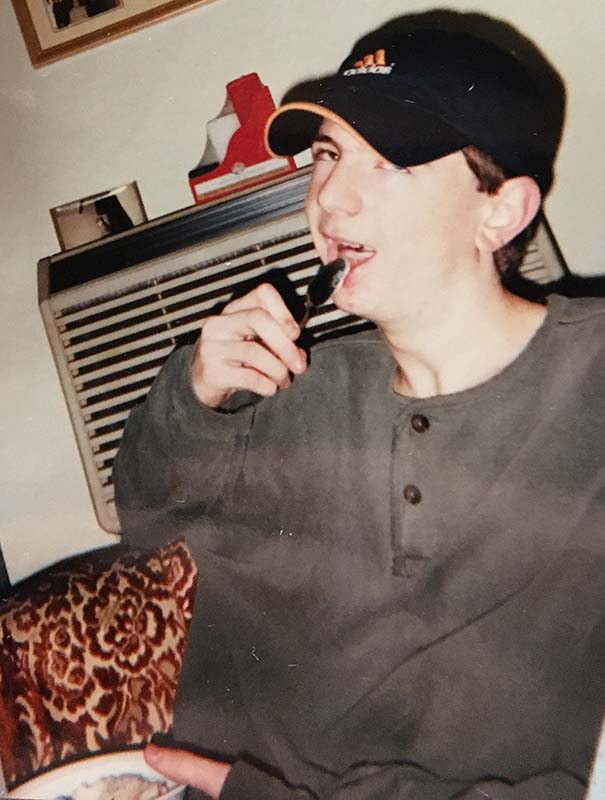

'90s Magic is a solo project built in Unity 6, modeled in Blender, and coded in VS Code. The card database comes from Scryfall's bulk data, filtered down to the 1993 to 1999 sets, omitting non-English cards, Renaissance, Collector's Edition (1993), Mercadian Masques, Unglued, and the 3 Portal sets. Card art is never bundled with the game: it streams from Scryfall as you play and is cached on your drive. Magazine scans stream the same way from scans on the Internet Archive.
The screens are built with Unity's UI Toolkit, which styles menus much like a web page. The world is dressed with either custom content or modified content from low-poly asset packs, the people are assembled from modular parts, conversations and the shop's ambient chatter run on the Pixel Crushers Dialogue System, and the WoW-style camera is built in Unity with Cinemachine. Even the save files are hand-rolled, so every save slot is its own little world.

I'm a 42 year old professional graphic designer and art director from Massachusetts. I grew up playing video games since the days of the original Nintendo Entertainment System, and started playing Magic: The Gathering in late 1994. I loved everything from the card artwork to the strategic nature of the game, and was hooked through the rest of the '90s. I still have my old card collection of about 3,000 cards, from Revised Edition to Urza's Destiny, complete with a very well played Underground Sea.
As a professional designer, I'm trying to do as much of the work myself as possible, with project management, planning, research, and occasional implementation (scripting, Blender animation help) help from Claude, and some more occasional research help from ChatGPT/Gemini/Copilot. No artwork, models, or environments are or will be AI generated. All design work is being done manually in Photoshop, InDesign, Figma, and After Effects. All web work is being done manually in HTML, CSS, and JavaScript in Visual Studio Code.
I'm developing this project on my own as a personal passion project and have no association with Wizards of the Coast. As such, this game will likely never be distributed and can not be sold — that was never the point in making it, anyway. This is my first foray into game development and I simply wanted to make a game about a subject I'm passionate about.




